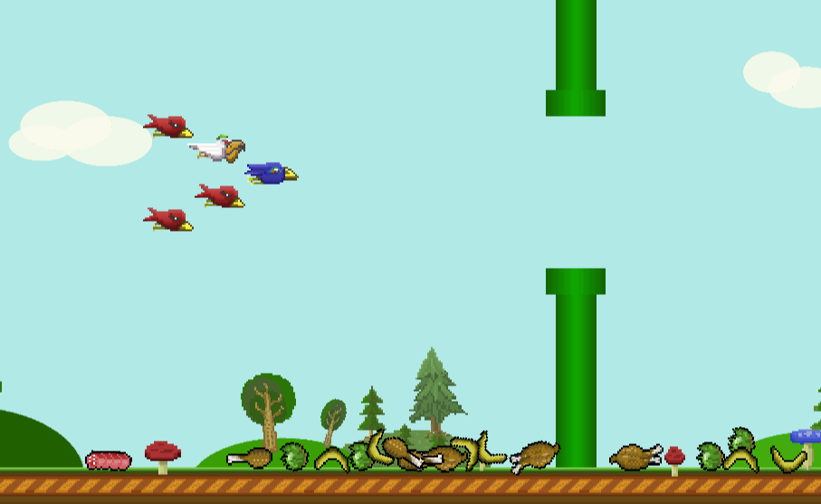

Birds project
Versions
Version 5 (May 2020)
added level and upgrades systems
added sounds
Version 4.2 (Apr 2020)
Prototype of shooting! Also:
added food counter
added base UI elements
Version 4.1 (Apr 2020)
A lot of new features here:
enemies use new attack formations and act more aggressively
you can finally gather the food!
added mighty camera shaking
bananas are now bouncy and jump very funny
Version 3.2 (Febr 2020)
Prototype of drag controls (was switched back to classic later). Added new stylish ground tiles
Version 3.1 (Febr 2020)
Just changed camera scale
Version 3 (Febr 2020)
Added cool arcade sprites for birds (6 different colors). Birds attack in groups now. You can move on vertical axis
Version 2 (Jan 2020)
Lovely art. Enemies are very challenging. Great food sprites
Version 1 (Jan 2020)
The very beginning. Smash the pelicans!
